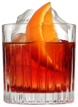

Bond ordered an Americano and examined the sprinkling of overdressed customers...- Ian Flemming, Casino Royal Book Series 1953
As with most cocktails the Americano's origin can not be confirmed but it is suggested that this cocktail was invented in Gaspare Campari's bar in Milan around the 1860's. It was originally know as 'Milano-Torino' in relation to where the ingredients came from, the name change was meant to attract more american tourists.
Some consider it the father of the Negroni, it is the first cocktail ordered by James Bond in the Ian Fleming's series, Casino Royale.